Last updated: 2020-09-18
Checks: 7 0
Knit directory: neural_scRNAseq/
This reproducible R Markdown analysis was created with workflowr (version 1.6.2). The Checks tab describes the reproducibility checks that were applied when the results were created. The Past versions tab lists the development history.
Great! Since the R Markdown file has been committed to the Git repository, you know the exact version of the code that produced these results.
Great job! The global environment was empty. Objects defined in the global environment can affect the analysis in your R Markdown file in unknown ways. For reproduciblity it's best to always run the code in an empty environment.
The command set.seed(20200522) was run prior to running the code in the R Markdown file. Setting a seed ensures that any results that rely on randomness, e.g. subsampling or permutations, are reproducible.
Great job! Recording the operating system, R version, and package versions is critical for reproducibility.
Nice! There were no cached chunks for this analysis, so you can be confident that you successfully produced the results during this run.
Great job! Using relative paths to the files within your workflowr project makes it easier to run your code on other machines.
Great! You are using Git for version control. Tracking code development and connecting the code version to the results is critical for reproducibility.
The results in this page were generated with repository version d1615eb. See the Past versions tab to see a history of the changes made to the R Markdown and HTML files.
Note that you need to be careful to ensure that all relevant files for the analysis have been committed to Git prior to generating the results (you can use wflow_publish or wflow_git_commit). workflowr only checks the R Markdown file, but you know if there are other scripts or data files that it depends on. Below is the status of the Git repository when the results were generated:
Ignored files:
Ignored: .DS_Store
Ignored: .Rhistory
Ignored: .Rproj.user/
Ignored: ._.DS_Store
Ignored: ._Rplots.pdf
Ignored: ._Rplots_largeViz.pdf
Ignored: ._Rplots_separate.pdf
Ignored: .__workflowr.yml
Ignored: ._neural_scRNAseq.Rproj
Ignored: analysis/.DS_Store
Ignored: analysis/.Rhistory
Ignored: analysis/._.DS_Store
Ignored: analysis/._01-preprocessing.Rmd
Ignored: analysis/._01-preprocessing.html
Ignored: analysis/._02.1-SampleQC.Rmd
Ignored: analysis/._03-filtering.Rmd
Ignored: analysis/._04-clustering.Rmd
Ignored: analysis/._04-clustering.knit.md
Ignored: analysis/._04.1-cell_cycle.Rmd
Ignored: analysis/._05-annotation.Rmd
Ignored: analysis/._Lam-0-NSC_no_integration.Rmd
Ignored: analysis/._Lam-01-NSC_integration.Rmd
Ignored: analysis/._Lam-02-NSC_annotation.Rmd
Ignored: analysis/._NSC-1-clustering.Rmd
Ignored: analysis/._NSC-2-annotation.Rmd
Ignored: analysis/.__site.yml
Ignored: analysis/._additional_filtering.Rmd
Ignored: analysis/._additional_filtering_clustering.Rmd
Ignored: analysis/._index.Rmd
Ignored: analysis/._organoid-01-clustering.Rmd
Ignored: analysis/._organoid-02-integration.Rmd
Ignored: analysis/._organoid-03-cluster_analysis.Rmd
Ignored: analysis/._organoid-04-group_integration.Rmd
Ignored: analysis/._organoid-04-stage_integration.Rmd
Ignored: analysis/._organoid-05-group_integration_cluster_analysis.Rmd
Ignored: analysis/._organoid-05-stage_integration_cluster_analysis.Rmd
Ignored: analysis/._organoid-06-1-prepare-sce.Rmd
Ignored: analysis/._organoid-06-conos-analysis-Seurat.Rmd
Ignored: analysis/._organoid-06-conos-analysis-function.Rmd
Ignored: analysis/._organoid-06-conos-analysis.Rmd
Ignored: analysis/._organoid-06-group-integration-conos-analysis.Rmd
Ignored: analysis/._organoid-07-conos-visualization.Rmd
Ignored: analysis/._organoid-07-group-integration-conos-visualization.Rmd
Ignored: analysis/._organoid-08-conos-comparison.Rmd
Ignored: analysis/._organoid-0x-sample_integration.Rmd
Ignored: analysis/01-preprocessing_cache/
Ignored: analysis/02-1-SampleQC_cache/
Ignored: analysis/02-quality_control_cache/
Ignored: analysis/02.1-SampleQC_cache/
Ignored: analysis/03-filtering_cache/
Ignored: analysis/04-clustering_cache/
Ignored: analysis/04.1-cell_cycle_cache/
Ignored: analysis/05-annotation_cache/
Ignored: analysis/Lam-01-NSC_integration_cache/
Ignored: analysis/Lam-02-NSC_annotation_cache/
Ignored: analysis/NSC-1-clustering_cache/
Ignored: analysis/NSC-2-annotation_cache/
Ignored: analysis/additional_filtering_cache/
Ignored: analysis/additional_filtering_clustering_cache/
Ignored: analysis/figure/
Ignored: analysis/organoid-01-clustering_cache/
Ignored: analysis/organoid-02-integration_cache/
Ignored: analysis/organoid-03-cluster_analysis_cache/
Ignored: analysis/organoid-04-group_integration_cache/
Ignored: analysis/organoid-05-group_integration_cluster_analysis_cache/
Ignored: analysis/organoid-06-conos-analysis_cache/
Ignored: analysis/organoid-06-conos-analysis_test_cache/
Ignored: analysis/organoid-06-group-integration-conos-analysis_cache/
Ignored: analysis/organoid-07-conos-visualization_cache/
Ignored: analysis/organoid-07-group-integration-conos-visualization_cache/
Ignored: analysis/organoid-08-conos-comparison_cache/
Ignored: analysis/organoid-0x-sample_integration_cache/
Ignored: analysis/sample5_QC_cache/
Ignored: data/.DS_Store
Ignored: data/._.DS_Store
Ignored: data/._.smbdeleteAAA17ed8b4b
Ignored: data/._Lam_figure2_markers.R
Ignored: data/._known_NSC_markers.R
Ignored: data/._known_cell_type_markers.R
Ignored: data/._metadata.csv
Ignored: data/data_sushi/
Ignored: data/filtered_feature_matrices/
Ignored: output/.DS_Store
Ignored: output/._.DS_Store
Ignored: output/._NSC_cluster1_marker_genes.txt
Ignored: output/._organoid_integration_cluster1_marker_genes.txt
Ignored: output/Lam-01-clustering.rds
Ignored: output/NSC_1_clustering.rds
Ignored: output/NSC_cluster1_marker_genes.txt
Ignored: output/NSC_cluster2_marker_genes.txt
Ignored: output/NSC_cluster3_marker_genes.txt
Ignored: output/NSC_cluster4_marker_genes.txt
Ignored: output/NSC_cluster5_marker_genes.txt
Ignored: output/NSC_cluster6_marker_genes.txt
Ignored: output/NSC_cluster7_marker_genes.txt
Ignored: output/additional_filtering.rds
Ignored: output/conos/
Ignored: output/conos_organoid-06-conos-analysis.rds
Ignored: output/conos_organoid-06-group-integration-conos-analysis.rds
Ignored: output/figures/
Ignored: output/organoid_integration_cluster10_marker_genes.txt
Ignored: output/organoid_integration_cluster11_marker_genes.txt
Ignored: output/organoid_integration_cluster12_marker_genes.txt
Ignored: output/organoid_integration_cluster13_marker_genes.txt
Ignored: output/organoid_integration_cluster14_marker_genes.txt
Ignored: output/organoid_integration_cluster15_marker_genes.txt
Ignored: output/organoid_integration_cluster16_marker_genes.txt
Ignored: output/organoid_integration_cluster17_marker_genes.txt
Ignored: output/organoid_integration_cluster1_marker_genes.txt
Ignored: output/organoid_integration_cluster2_marker_genes.txt
Ignored: output/organoid_integration_cluster3_marker_genes.txt
Ignored: output/organoid_integration_cluster4_marker_genes.txt
Ignored: output/organoid_integration_cluster5_marker_genes.txt
Ignored: output/organoid_integration_cluster6_marker_genes.txt
Ignored: output/organoid_integration_cluster7_marker_genes.txt
Ignored: output/organoid_integration_cluster8_marker_genes.txt
Ignored: output/organoid_integration_cluster9_marker_genes.txt
Ignored: output/sce_01_preprocessing.rds
Ignored: output/sce_02_quality_control.rds
Ignored: output/sce_03_filtering.rds
Ignored: output/sce_03_filtering_all_genes.rds
Ignored: output/sce_06-1-prepare-sce.rds
Ignored: output/sce_organoid-01-clustering.rds
Ignored: output/sce_preprocessing.rds
Ignored: output/so_04-group_integration.rds
Ignored: output/so_04_1_cell_cycle.rds
Ignored: output/so_04_clustering.rds
Ignored: output/so_0x-sample_integration.rds
Ignored: output/so_additional_filtering_clustering.rds
Ignored: output/so_integrated_organoid-02-integration.rds
Ignored: output/so_merged_organoid-02-integration.rds
Ignored: output/so_organoid-01-clustering.rds
Ignored: output/so_sample_organoid-01-clustering.rds
Untracked files:
Untracked: Rplots.pdf
Untracked: Rplots_largeViz.pdf
Untracked: Rplots_separate.pdf
Untracked: analysis/Lam-0-NSC_no_integration.Rmd
Untracked: analysis/additional_filtering.Rmd
Untracked: analysis/additional_filtering_clustering.Rmd
Untracked: analysis/organoid-05-stage_integration_cluster_analysis.Rmd
Untracked: analysis/organoid-06-conos-analysis-Seurat.Rmd
Untracked: analysis/organoid-06-conos-analysis-function.Rmd
Untracked: analysis/organoid-07-conos-visualization.Rmd
Untracked: analysis/organoid-07-group-integration-conos-visualization.Rmd
Untracked: analysis/organoid-08-conos-comparison.Rmd
Untracked: analysis/organoid-0x-sample_integration.Rmd
Untracked: analysis/sample5_QC.Rmd
Untracked: data/Homo_sapiens.GRCh38.98.sorted.gtf
Untracked: data/Kanton_et_al/
Untracked: data/Lam_et_al/
Untracked: scripts/
Unstaged changes:
Modified: analysis/Lam-02-NSC_annotation.Rmd
Modified: analysis/_site.yml
Modified: analysis/organoid-02-integration.Rmd
Modified: analysis/organoid-04-group_integration.Rmd
Modified: analysis/organoid-06-conos-analysis.Rmd
Note that any generated files, e.g. HTML, png, CSS, etc., are not included in this status report because it is ok for generated content to have uncommitted changes.
These are the previous versions of the repository in which changes were made to the R Markdown (analysis/organoid-04-stage_integration.Rmd) and HTML (docs/organoid-04-stage_integration.html) files. If you've configured a remote Git repository (see ?wflow_git_remote), click on the hyperlinks in the table below to view the files as they were in that past version.
| File | Version | Author | Date | Message |
|---|---|---|---|---|
| Rmd | d1615eb | khembach | 2020-09-18 | integrate by cell line and stage |
library(BiocParallel)
library(ggplot2)
library(dplyr)
library(cowplot)
library(ggplot2)
library(Seurat)
library(SingleCellExperiment)
library(future)# increase future's maximum allowed size of exported globals
# the default is 2GB
options(future.globals.maxSize = 11000 * 1024 ^ 2)
# change the current plan to access parallelization
plan("multiprocess", workers = 20)so_nsc <- readRDS(file.path("output", "so_04_clustering.rds"))
DefaultAssay(so_nsc) <- "RNA"so_org <- readRDS(file.path("output", "so_organoid-01-clustering.rds"))
DefaultAssay(so_org) <- "RNA"We integrate the two datasets using our three groups and the two cell lines from Kanton et al.
## make sure column names match between datasets:
## we will use integration_group, sample_id, group_id, Stage, nUMI, fractionMt, nGene,
so_nsc$Stage <- so_nsc$group_id
so_nsc$nUMI <- so_nsc$sum
so_nsc$fractionMt <- so_nsc$subsets_Mt_fraction
so_nsc$nGene <- so_nsc$detected
so_nsc$sum <- NULL
so_nsc$subsets_Mt_fraction <- NULL
so_nsc$detected <- NULL
so_org$sample_id <- so_org$Sample
so_org$group_id <- so_org$Line
so_org$fractionMt <- so_org$PercentMito
so_org$Line <- NULL
so_org$PercentMito <- NULL
so_nsc$integration_group <- so_nsc$group_id
so_org$integration_group <- paste0(so_org$Stage, "_", so_org$group_id)
# split cells by integration group
cells_by_sample <- split(colnames(so_nsc), so_nsc$integration_group)
so_nsc <- lapply(cells_by_sample, function(i) subset(so_nsc, cells = i))
cells_by_sample <- split(colnames(so_org), so_org$integration_group)
so_org <- lapply(cells_by_sample, function(i) subset(so_org, cells = i))
## we combine the two lists
so <- c(so_nsc, so_org)
## Identify the top 2000 genes with high cell-to-cell variation
so <- lapply(so, FindVariableFeatures, nfeatures = 2000,
selection.method = "vst", verbose = FALSE)## find anchors & integrate
as <- FindIntegrationAnchors(so, verbose = FALSE)
so <- IntegrateData(anchorset = as, dims = seq_len(30), verbose = FALSE)DefaultAssay(so) <- "integrated"
## We scale the data
so <- ScaleData(so, verbose = FALSE,
vars.to.regress = c("nUMI", "fractionMt"))so <- RunPCA(so, npcs = 30, verbose = FALSE)
so <- RunTSNE(so, reduction = "pca", dims = seq_len(20),
seed.use = 1, do.fast = TRUE, verbose = FALSE)
so <- RunUMAP(so, reduction = "pca", dims = seq_len(20),
seed.use = 1, verbose = FALSE)
## PCA plot
DimPlot(so, reduction = "pca", group.by = "sample_id")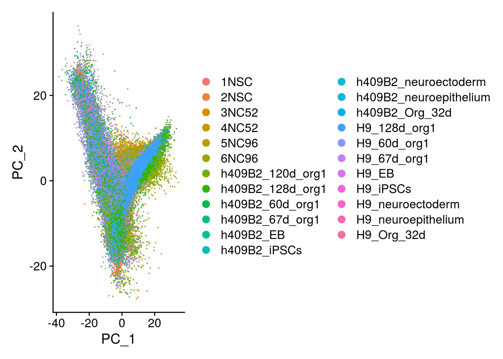
# elbow plot with the ranking of PCs based on the % of variance explained
ElbowPlot(so, ndims = 30)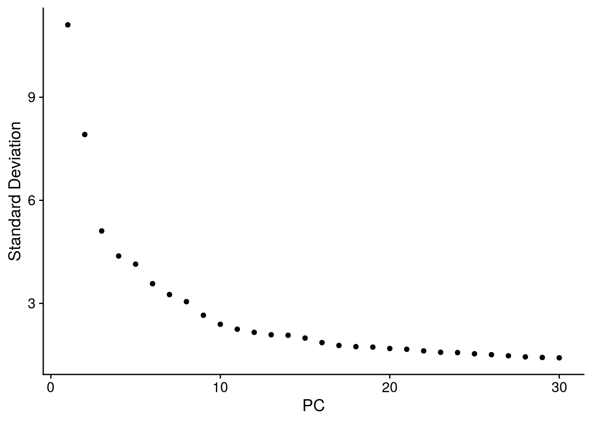
so <- FindNeighbors(so, reduction = "pca", dims = seq_len(20), verbose = FALSE)
so <- FindClusters(so, resolution = 0.4, random.seed = 1, verbose = FALSE)## we use factors for plotting
so$group_id <- factor(so$group_id,
levels = c("P22", "D52", "D96", "H9", "409b2"))
## order levels according to experiment timeline (Fig. 1a)
so$Stage <- factor(so$Stage, levels = c("P22", "D52", "D96", "iPSCs", "EB",
"Neuroectoderm", "Neuroepithelium",
"Organoid-1M", "Organoid-2M",
"Organoid-4M"))
## merge the lineage labels of identical cell types
so$cl_FullLineage <- as.factor(so$cl_FullLineage)
levels(so$cl_FullLineage) <- c("choroid plexus/mesenchymal-like cells",
"cortical neurons", "cortical neurons",
"cycling dorsal progenitors", "cycling ventral progenitors",
"ectodermal/neuroectodermal-like cells",
"gliogenic/outer RGCs and astrocytes",
"IPs and early cortical neurons", "midbrain/hindbrain cells",
"neuroepithelial-like cells", "retina progenitors", "RGCs",
"RGCs early", "RGCs early", "stem cells", "stem cells",
"stem cells", "ventral progenitors and neurons",
"ventral progenitors and neurons",
"ventral progenitors and neurons")We plot the dimension reduction (DR) and color by the groups used for integration, sample/cell line, group/Stage, organoid cluster labels, cluster ID.
# set cluster IDs to resolution 0.4 clustering
so <- SetIdent(so, value = "integrated_snn_res.0.4")
so@meta.data$cluster_id <- Idents(so)
cs <- sample(colnames(so), 10e3)
.plot_dr <- function(so, dr, id)
DimPlot(so, cells = cs, group.by = id, reduction = dr, pt.size = 0.4) +
guides(col = guide_legend(nrow = 11,
override.aes = list(size = 3, alpha = 1))) +
theme_void() + theme(aspect.ratio = 1)
ids <- c("integration_group", "sample_id", "group_id", "Stage",
"cl_FullLineage", "cl_LineComp", "PredCellType", "ident")
for (id in ids) {
cat("### ", id, "\n")
p1 <- .plot_dr(so, "tsne", id)
lgd <- get_legend(p1)
p1 <- p1 + theme(legend.position = "none")
p2 <- .plot_dr(so, "umap", id) + theme(legend.position = "none")
ps <- plot_grid(plotlist = list(p1, p2), nrow = 1)
p <- plot_grid(ps, lgd, nrow = 1, rel_widths = c(1, 0.5))
print(p)
cat("\n\n")
}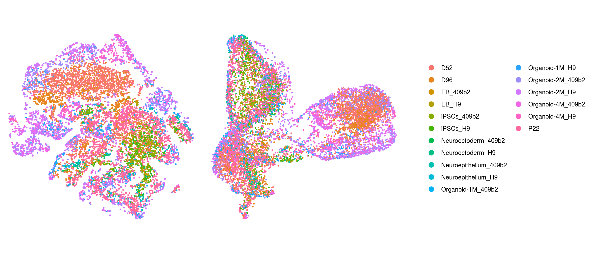
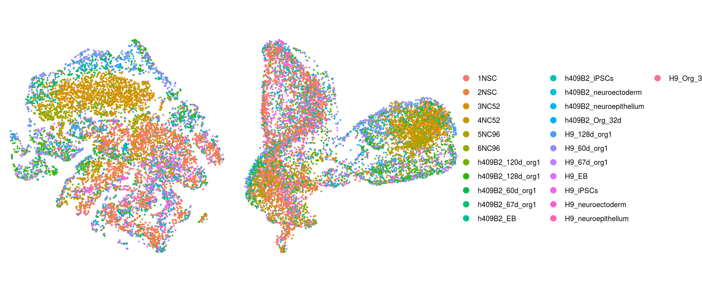
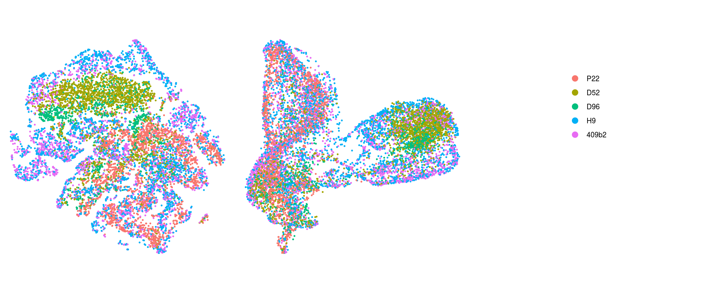
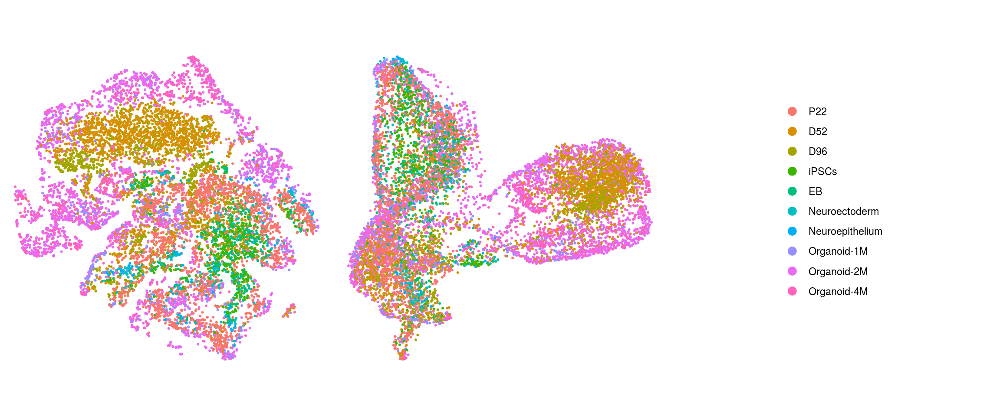
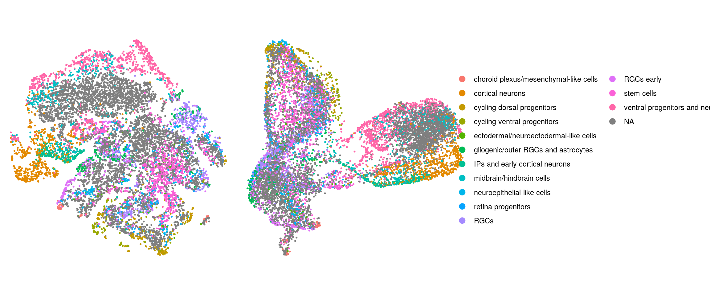
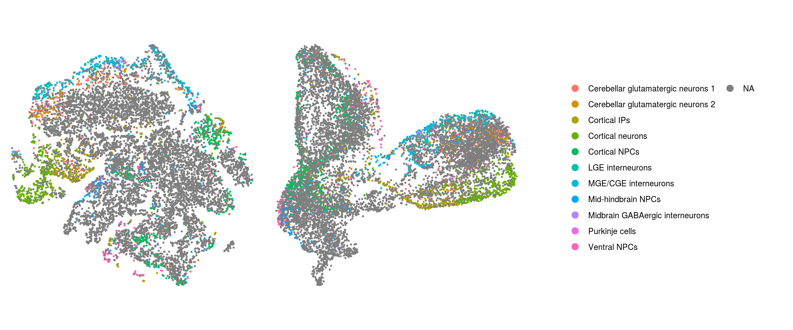
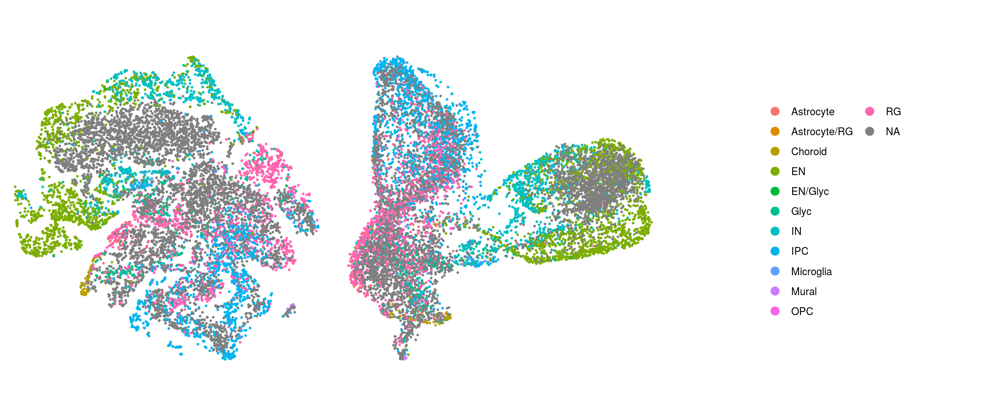
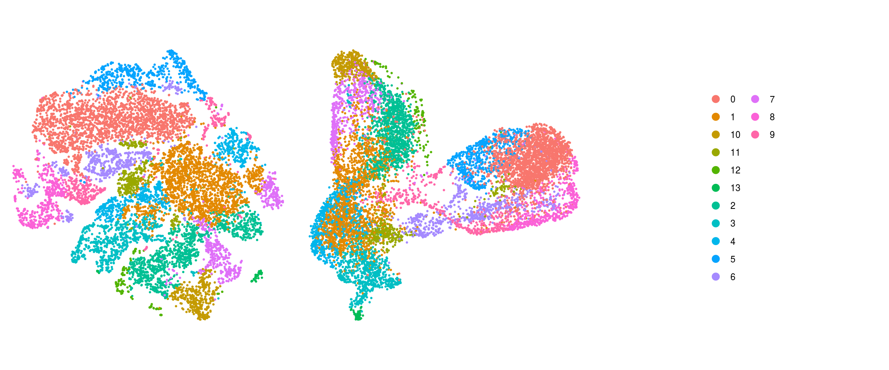
.plot_features <- function(so, dr, id) {
FeaturePlot(so, cells = cs, features = id, reduction = dr, pt.size = 0.4,
cols = c("grey", "blue")) +
guides(col = guide_legend(nrow = 11,
override.aes = list(size = 3, alpha = 1))) +
theme_void() + theme(aspect.ratio = 1)
}
ids <- c("nUMI", "nGene", "fractionMt")
for (id in ids) {
cat("### ", id, "\n")
p1 <- .plot_features(so, "tsne", id)
lgd <- get_legend(p1)
p1 <- p1 + theme(legend.position = "none") + ggtitle("tSNE")
p2 <- .plot_features(so, "umap", id) + theme(legend.position = "none") +
ggtitle("UMAP")
ps <- plot_grid(plotlist = list(p1, p2), nrow = 1)
p <- plot_grid(ps, lgd, nrow = 1, rel_widths = c(1, 0.2))
print(p)
cat("\n\n")
}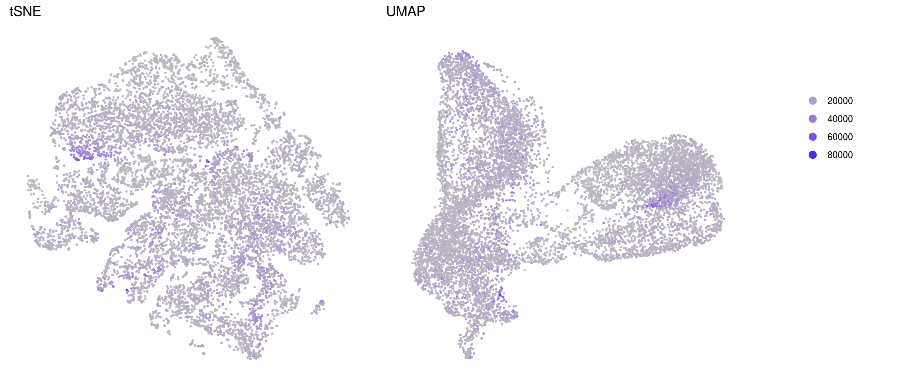
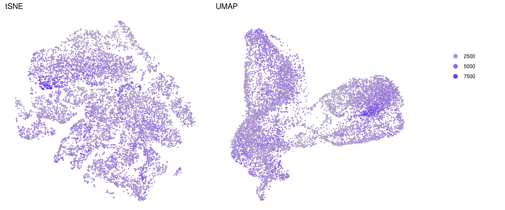
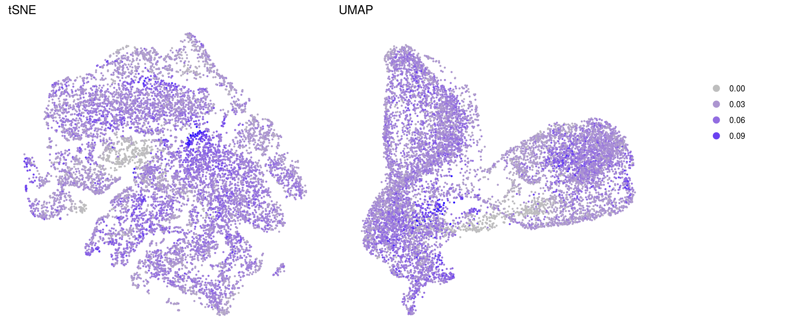
saveRDS(so, file.path("output", "so_04-stage_integration.rds"))
sessionInfo()R version 4.0.0 (2020-04-24)
Platform: x86_64-pc-linux-gnu (64-bit)
Running under: Ubuntu 16.04.6 LTS
Matrix products: default
BLAS: /usr/local/R/R-4.0.0/lib/libRblas.so
LAPACK: /usr/local/R/R-4.0.0/lib/libRlapack.so
locale:
[1] LC_CTYPE=en_US.UTF-8 LC_NUMERIC=C
[3] LC_TIME=en_US.UTF-8 LC_COLLATE=en_US.UTF-8
[5] LC_MONETARY=en_US.UTF-8 LC_MESSAGES=en_US.UTF-8
[7] LC_PAPER=en_US.UTF-8 LC_NAME=C
[9] LC_ADDRESS=C LC_TELEPHONE=C
[11] LC_MEASUREMENT=en_US.UTF-8 LC_IDENTIFICATION=C
attached base packages:
[1] parallel stats4 stats graphics grDevices utils datasets
[8] methods base
other attached packages:
[1] future_1.17.0 SingleCellExperiment_1.10.1
[3] SummarizedExperiment_1.18.1 DelayedArray_0.14.0
[5] matrixStats_0.56.0 Biobase_2.48.0
[7] GenomicRanges_1.40.0 GenomeInfoDb_1.24.2
[9] IRanges_2.22.2 S4Vectors_0.26.1
[11] BiocGenerics_0.34.0 Seurat_3.1.5
[13] cowplot_1.0.0 dplyr_1.0.2
[15] ggplot2_3.3.2 BiocParallel_1.22.0
[17] workflowr_1.6.2
loaded via a namespace (and not attached):
[1] nlme_3.1-148 tsne_0.1-3 bitops_1.0-6
[4] fs_1.4.2 RcppAnnoy_0.0.16 RColorBrewer_1.1-2
[7] httr_1.4.1 rprojroot_1.3-2 sctransform_0.2.1
[10] tools_4.0.0 backports_1.1.9 R6_2.4.1
[13] irlba_2.3.3 KernSmooth_2.23-17 uwot_0.1.8
[16] lazyeval_0.2.2 colorspace_1.4-1 withr_2.2.0
[19] tidyselect_1.1.0 gridExtra_2.3 compiler_4.0.0
[22] git2r_0.27.1 plotly_4.9.2.1 labeling_0.3
[25] scales_1.1.1 lmtest_0.9-37 ggridges_0.5.2
[28] pbapply_1.4-2 rappdirs_0.3.1 stringr_1.4.0
[31] digest_0.6.25 rmarkdown_2.3 XVector_0.28.0
[34] pkgconfig_2.0.3 htmltools_0.5.0 htmlwidgets_1.5.1
[37] rlang_0.4.7 farver_2.0.3 generics_0.0.2
[40] zoo_1.8-8 jsonlite_1.7.0 ica_1.0-2
[43] RCurl_1.98-1.2 magrittr_1.5 GenomeInfoDbData_1.2.3
[46] patchwork_1.0.1 Matrix_1.2-18 Rcpp_1.0.5
[49] munsell_0.5.0 ape_5.4 reticulate_1.16
[52] lifecycle_0.2.0 stringi_1.4.6 whisker_0.4
[55] yaml_2.2.1 zlibbioc_1.34.0 MASS_7.3-51.6
[58] Rtsne_0.15 plyr_1.8.6 grid_4.0.0
[61] listenv_0.8.0 promises_1.1.1 ggrepel_0.8.2
[64] crayon_1.3.4 lattice_0.20-41 splines_4.0.0
[67] knitr_1.29 pillar_1.4.6 igraph_1.2.5
[70] future.apply_1.6.0 reshape2_1.4.4 codetools_0.2-16
[73] leiden_0.3.3 glue_1.4.2 evaluate_0.14
[76] data.table_1.12.8 vctrs_0.3.4 png_0.1-7
[79] httpuv_1.5.4 gtable_0.3.0 RANN_2.6.1
[82] purrr_0.3.4 tidyr_1.1.0 xfun_0.15
[85] rsvd_1.0.3 RSpectra_0.16-0 later_1.1.0.1
[88] survival_3.2-3 viridisLite_0.3.0 tibble_3.0.3
[91] cluster_2.1.0 globals_0.12.5 fitdistrplus_1.1-1
[94] ellipsis_0.3.1 ROCR_1.0-11